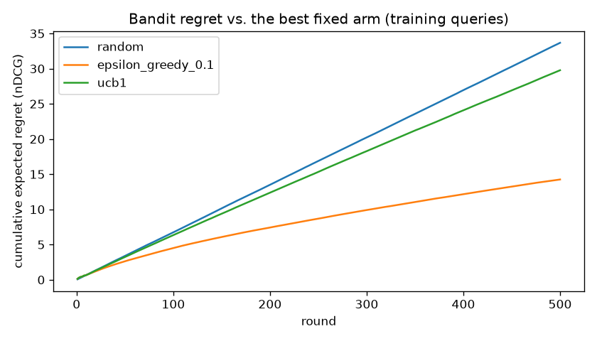
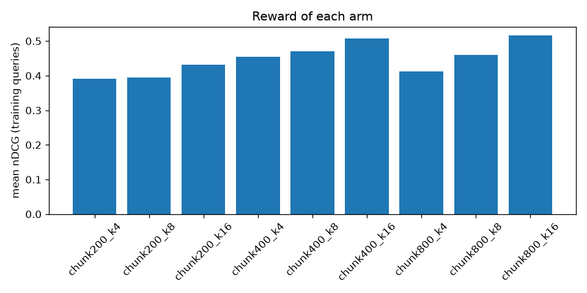

Multi-armed bandits that choose a RAG retrieval configuration from measured retrieval quality. Built on the agentic-rag-eval-platform library, with seeded simulations and the uncertainty stated plainly.
Mean retrieval quality (nDCG@k) of each configuration over the 20 answerable questions, using BM25 over the pinned PEP corpus. The best arm leads its runner-up by 0.022.
Bars run from 0 to 0.5 nDCG. The reward measures retrieval, not answer quality.
500 rounds, 200 seeded runs per policy. Each round draws a training query and the chosen arm earns its nDCG on it. Regret is measured against the best fixed arm.
| Policy | Cumulative regret (mean ± sd) | Most common final arm | Held-out nDCG of final arm |
|---|---|---|---|
| Random | 33.7 ± 1.0 | chunk800_k16 (42%) | 0.297 |
| Epsilon-greedy (ε = 0.1) | 14.3 ± 9.2 | chunk800_k16 (52%) | 0.305 |
| UCB1 | 29.8 ± 1.3 | chunk800_k16 (54%) | 0.305 |
Held-out nDCG is measured on the 10 test queries the policies never saw. The best arm on that half scored 0.323; a random arm averaged 0.253.


Twenty answerable queries from one evaluation set. The held-out split is ten queries per side. Neither is large enough to settle which arm is best.
nDCG@k favours larger k by construction. Answer faithfulness, generation cost and latency are not measured. The RAG library measures those with LLM judges, which this project does not run.
Vector and hybrid retrieval need an embedding model download that was not reachable where this was built, so every arm uses BM25.
A larger held-out evaluation set, the vector and hybrid arms, and query type as context for a contextual bandit.
results/rewards.json, which records the library commit, eval-set version and
dataset version it was computed from.